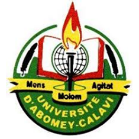
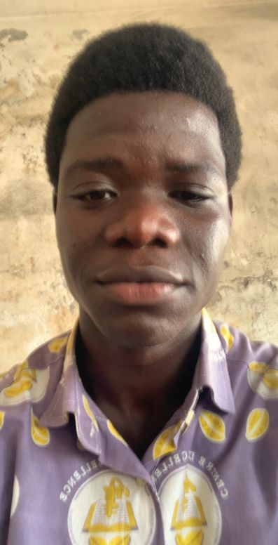
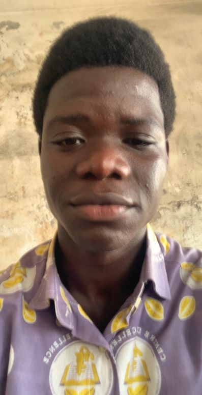

 REPUBLIQUE DU BENIN
* * *
UNIVERSITE D'ABOMEY CALAVI
* * *
ECOLE NATIONALE D'ECONOMIE APPLIQUEE ET DE MANAGEMENT
* * *

I-Etat Civil
Nom:BAWA SACCA Hamid
Age:18 ans
Date de naissance:10 janvier 2006
II-Mes Diplomes
1-BEPC
2-BAC
3-BTS
III-Ma Personnalite
REPUBLIQUE DU BENIN
* * *
UNIVERSITE D'ABOMEY CALAVI
* * *
ECOLE NATIONALE D'ECONOMIE APPLIQUEE ET DE MANAGEMENT
* * *

I-Etat Civil
Nom:BAWA SACCA Hamid
Age:18 ans
Date de naissance:10 janvier 2006
II-Mes Diplomes
1-BEPC
2-BAC
3-BTS
III-Ma Personnalite
Je suis actif,
dynamique,
tres curieux
et toujours
dispose a
apprendre de
nouvelles choses.
Je dispose egalement
d'un bon sens
du travail.